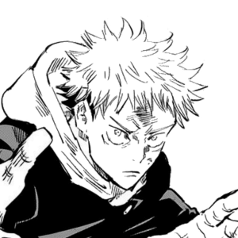
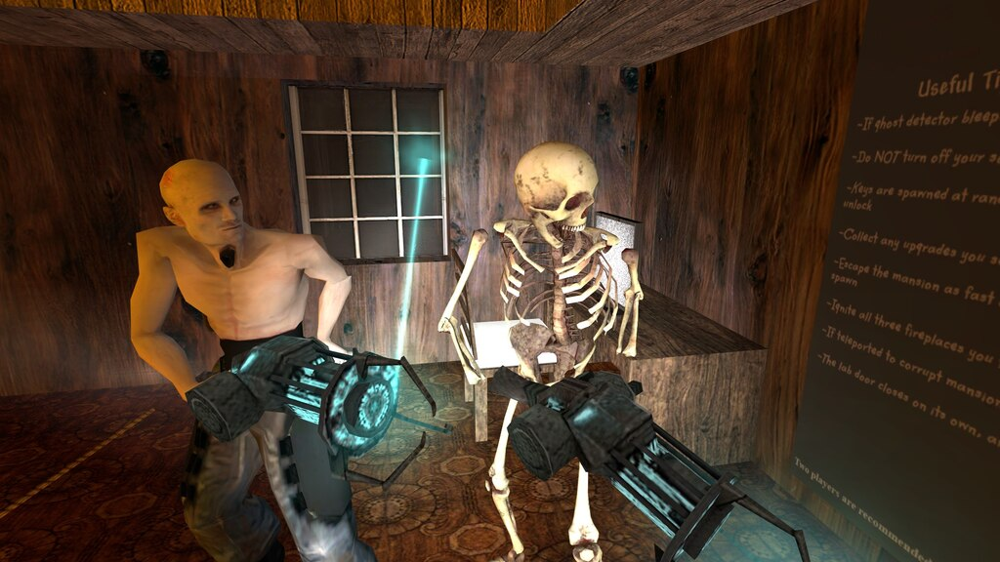

June 3, 2024

Hello Everyone!
With summer rolling around we have our first event! :heartdog: The event will be held on Friday, June 7, 2024 8:00 PM (Time is based on your devices time settings)
We'll play Minecraft Bingo Hunt and will give away two epic skins! (Only current SBU students will be eligible to win prizes)
The event will be plenty fun so be there or be square 🟥
How to play + miscellaneous rulings:
- Each player will be able to see a central bingo board to copy. (This is the bingo board that everyone can see and everyone is working to copy).
- Your objective is to find each item correlating to the central bingo board.
- You can mine, destroy, explore the map, but you cannot steal/take the items from the central bingo board.
- You must obtain two bingos (Two diagonal, horizontal, or vertical rows) to win.
- If you die, you die. You will drop all items.
- PVP is turned off so you cannot kill anyone else, but keep inventory is also turned off, so if you die from mobs or any other external causes then you will drop items as previously stated.
- Exploits and loopholes are prohibited, so if it doesn't sound like its allowed then please ask.
- he prize for winning is additional entries to our giveaway of two epic skins.
- You may take the items dropped from dead players.
- You may team up but only ONE person from your respective team will get the bonus entry.
- You only need to be in the voice chat in the very beginning and very end (that way we can announce giveaway winners and answer questions about rulings, etc)
- You will be given a 16 steaks, and 6 pieces of wood.
- There will be an Ender Chest at spawn for item storage should you choose to utilize it.
June 1, 2024

Chap begins with Yuji deciding that he will crush Sukuna's heart
As soon as Sukuna chants ‘Domain Expansion’, he sees Gojo standing & in disbelief Sukuna wonders if it's really him but pushes away that thought as he says it's impossible!
But Sukuna suddenly realises who it is & punches away Yuji as he moves forward & says “I apologise for underestimating you!! I didn't know you were capable of going that far, YUTA OKKOTSU!!”
SUKUNA ADDRESS GOJO AS YUTA!!!
May 31, 2024

Number one. Steady hand. One day, Kim Jong Un need new heart. I do operation. But mistake! Kim Jong Un die! SSD very mad! I hide fishing boat, come to America. No English, no food, no money. Darryl give me job. Now I have house, American car and new woman. Darryl save life.
My big secret. I kill Kim Jong Un on purpose. I good surgeon. The best!
I just downvoted your comment.
FAQ
What does this mean?
The amount of karma (points) on your comment and Reddit account has decreased by one.
Why did you do this?
There are several reasons I may deem a comment to be unworthy of positive or neutral karma. These include, but are not limited to:
Rudeness towards other Redditors,
Spreading incorrect information,
Sarcasm not correctly flagged with a /s.
Am I banned from the Reddit?
No - not yet. But you should refrain from making comments like this in the future. Otherwise I will be forced to issue an additional downvote, which may put your commenting and posting privileges in jeopardy.
I don't believe my comment deserved a downvote. Can you un-downvote it?
Sure, mistakes happen. But only in exceedingly rare circumstances will I undo a downvote. If you would like to issue an appeal, shoot me a private message explaining what I got wrong. I tend to respond to Reddit PMs within several minutes. Do note, however, that over 99.9% of downvote appeals are rejected, and yours is likely no exception.
How can I prevent this from happening in the future?
Accept the downvote and move on. But learn from this mistake: your behavior will not be tolerated on Reddit.com. I will continue to issue downvotes until you improve your conduct. Remember: Reddit is privilege, not a right.